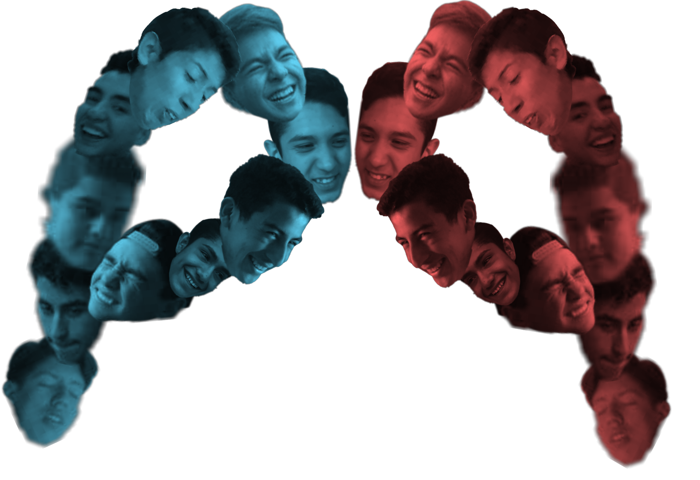

PuchasPsychology
Emociones
Las emociones son reacciones psicofisiológicas que representan modos de adaptación a ciertos estímulos del individuo cuando percibe un objeto, persona, lugar, suceso
o recuerdo importante. Psicológicamente, las emociones alteran la atención, hacen subir de rango ciertas conductas guía de respuestas del individuo y activan redes
asociativas relevantes en la memoria. Los sentimientos son el resultado de las emociones, son más duraderos en el tiempo y pueden ser verbalizados (palabras).
Fisiológicamente, las emociones organizan rápidamente las respuestas de distintos sistemas biológicos, incluidas las expresiones faciales, los músculos, la voz, la actividad
del SNA y la del sistema endocrino, pudiendo tener como fin el establecer un medio interno óptimo para el comportamiento más efectivo. Los diversos estados emocionales son
causados por la liberación de neurotransmisores (o neuromediador) u hormonas, que luego convierten estas emociones en sentimientos y finalmente en el lenguaje. Conductualmente,
las emociones sirven para establecer nuestra posición con respecto a nuestro entorno, y nos impulsan hacia ciertas personas, objetos, acciones, ideas y nos alejan de otros. Las
emociones actúan también como depósito de influencias innatas y aprendidas. Poseen ciertas características invariables y otras que muestran cierta variación entre individuos,
grupos y culturas.
